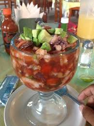

Ingredientes para preparar Vuelve a la Vida:
Sigue la receta para preparar este delicioso coctel que es el
vuelve a la vida.
Ingredientes:
pasos de preparacion:
1.Macere el callo de hacha en jugo de limon con sal durante dos horas.
2.Agregue los camarones, vino blanco,cebolla,cilantro,ostiones con su salmuera, salsas, sal y pimienta.
3.Sirva en copas oindividuales, adorne con rebanadas de aguacate y acompañe con galletas saladas o tostadas.